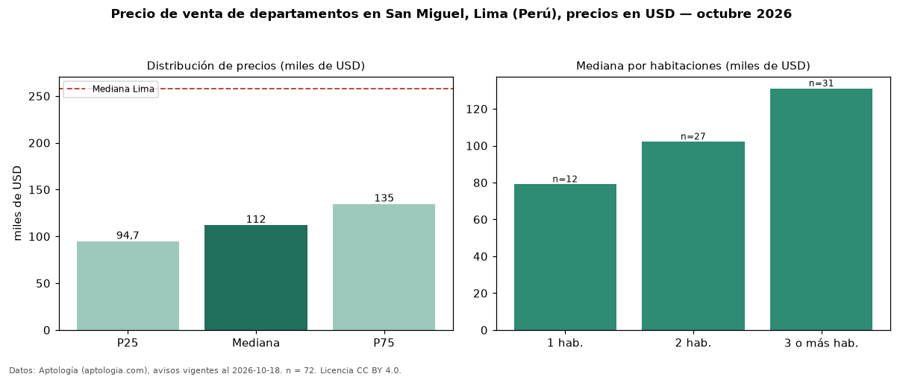

Precio de venta de departamentos en San Miguel, Lima (Perú), precios en USD — octubre 2026
Con 72 avisos vigentes, el precio mediano de departamentos en venta en San Miguel, Lima (Perú) es USD 111.995. Frente a la mediana de Lima para departamentos (USD 258.023), queda 57 % por debajo. Por metro cuadrado, la mediana es USD 1.845/m² (n = 67 avisos con área), 20 % por debajo de Lima (USD 2.305/m²). Por precio mediano es el puesto 17 de 18 distritos de Lima con al menos 30 avisos de departamentos en venta (USD): entre las más económicas. El área mediana anunciada es 65 m². El segmento con más oferta es el de 3 o más habitaciones (31 avisos, mediana USD 131.035); pasar de 1 habitación a 3 o más habitaciones cambia la mediana +66 %. La mitad central de los avisos va de USD 94.725 a USD 134.618 (razón 1,4), una dispersión moderada. Datos: Aptología (aptologia.com), CC BY 4.0 — https://www.aptologia.com/pe/venta/lima/san-miguel. Archivos: PDF, CSV con las cifras y gráfica PNG.

| Avisos únicos | 72 |
|---|---|
| Percentil 25 | COP 94.725 |
| Mediana | COP 111.995 |
| Percentil 75 | COP 134.617 |
| Mediana por m² | COP 1.845 |
Fuente: avisos vigentes de portales inmobiliarios recopilados por Aptología, deduplicados (mínimo 30 avisos únicos por celda). Precios pedidos, no cerrados. Fecha: 2026-10-18.